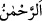

(basmak)” masdarı “
(basılmış/bastırılmış)” mânâsınadır. Kur’ân’ın Allah Teâlâ
katından indirilmiş olduğu kemal üzere bilinip tanındığı için sanki Kur’an
tenzîlin/indirmenin bizzat kendisiymiş gibi ifâde edilmiştir.
“
” kelimesi, kesret ve mübalâğa üzerine binâ edilmiştir. Şuna işaret etmektedir:
Bu Kur’an gökten bir kerede inmedi, belki de yirmi üç yıl müddetince defalarca kerede
indi. On üç yıl Mekke’de, on yıl Medine’de ihtiyaca ve vakte göre peyderpey, âyet âyet,
sûre sûre nâzil oldu.
“
” kudret ile yapılabilecek her şeye galib, üstün ve hükümran olan mütekebbir,
itâat edenlerin tâatinden müstağnî olan, kendisine muhâlefet eden ve Kur’an’ı tasdik
etmeyenlerden intikam alan demektir.
Bu ismin özelliği ise sûret, hakîkat veya mânâ bakımından zenginlik ve izzetin
meydana gelmesidir. Her kim bu ismi kırk gün süreyle, günde kırk defa okursa Allah
Teâlâ ona yardım eder ve aziz kılar. Onu yarattıklarından hiçbirine muhtaç etmez.
el-Erbeûne’l-İdrisîyye’de der ki:
Ey Aziz; karşı konulmaz, işine galip olup da hiçbir şeyin kendisine denk olmadığı!
Sühreverdî der ki: “Kim bu ismi yedi gün süreyle peş peşe, her gün biner kere okursa
Allah o kimsenin hasım ve düşmanını helâk eder. Bu ismi yetmiş kere düşman askerinin
yüzüne okuyup eliyle onlara işâret ederse mağlup olurlar.”
“
(çok merhametli)” mü’min kullarını gaflet uykusundan, unutma uyuşukluğundan
uyandırmak için Kur’an’ı indirerek onlara lütuf ve ihsanda bulunan demektir. Bu ismin
özelliği kalbin rikkat ve yumuşaklığı, yaratılmışlara şefkat ve merhamettir. Kim bu ismi
her gün yüz kere okumaya devam ederse bu meziyet hasıl olur. İstenmeyen bir şeye
dûçar olmaktan endişe eden kimse bu ismi onun arkadaşı olan “
” ismiyle birlikte
zikreder veya üzerinde taşır.
el-Erbeûne’l-İdrisîyye’de der ki:
“Ey her feryâd edene ve derde dûçar olana merhamet eden, onun yardım ve imdâdına
yetişen, onun sığınak ve barınağı!”
Sühreverdî der ki: “Kişi bu ismi yazar, suda eritir ve bu suyu ağacın köküne dökerse
bu ağacın meyvesi bereketlenir. Kim bu sudan içerse onu yazana iştiyak duyar. Yine bu
isim tâlib, matlûb ve onun annesinin ismiyle beraber yazılırsa o kimse âşık olur,
dayanılamayacak bir şevk ve iştiyaka tutulur. Böyle yapılan kimse lâyık bir kimse ise
onun hakkında bunu yapmak câiz olur. Aksi halde olmaz.
el-İrşâd’da der ki: “Tam üstünlüğü ve genel bir şefkati ifade eden bu iki değerli ismin